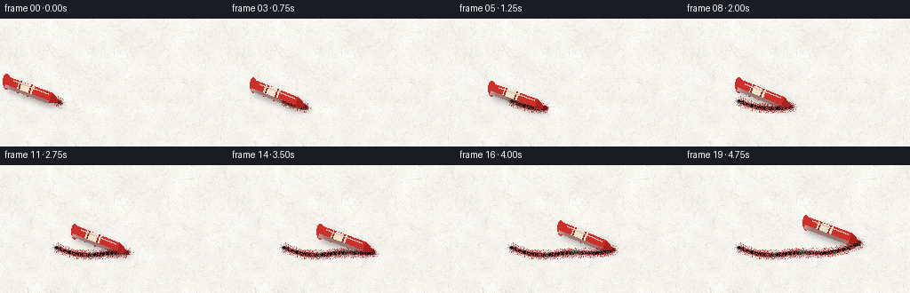
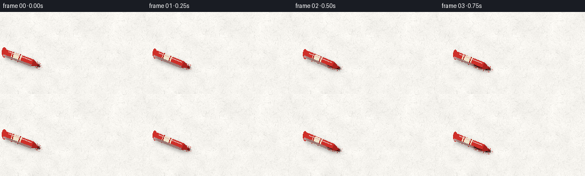

CODING AGENTS AS PIXEL WORLD MODELS
traex/Seed-2.1-Pro-0915 · phygen_033
点击播放 · 原生 RGB 像素
此结果可播放，但该运行尚未通过最终提交审核。页面展示不代表评测通过。
逐轮保存的候选
回放视频、检查图与代码变化。
每份候选均可单独播放。实际图片检查记录在下方工具轨迹中。
候选 01播放与检查图
点击播放 · 原生 RGB 像素


展开代码变化
--- 上一保存版本
+++ 本次保存版本
@@ -0,0 +1,234 @@
+"""Procedural text-to-video generator.
+
+Scene: a red crayon drawing on rough white paper, viewed from above.
+Pure numpy + PIL: paper fiber texture, accumulating waxy stroke with
+paper-tooth gaps, and a shaded crayon body with contact shadow.
+"""
+import math
+from pathlib import Path
+
+import numpy as np
+from PIL import Image, ImageDraw, ImageFilter
+
+import artifact_io
+
+SEED = 21
+W, H, N, FPS = 256, 144, 20, 4.0
+CASE_DIR = Path(__file__).parent
+
+rng = np.random.default_rng(SEED)
+
+
+# ---------------------------------------------------------------- paper
+def make_paper():
+ base = np.array([247, 245, 240], dtype=np.float32)
+ img = np.ones((H, W, 3), dtype=np.float32) * base
+
+ # Fine grain.
+ fine = rng.normal(0, 3.2, (H, W)).astype(np.float32)
+ # Low-frequency blotches from an upscaled random field.
+ low = rng.normal(0, 1, (12, 20)).astype(np.float32)
+ low_img = np.array(
+ Image.fromarray(((low - low.min()) / (np.ptp(low)) * 2 - 1).astype(np.float32), mode="F")
+ .resize((W, H), Image.BILINEAR)
+ )
+ shade = fine + low_img * 7.0
+ img += shade[..., None]
+
+ paper = Image.fromarray(np.clip(img, 0, 255).astype(np.uint8))
+ draw = ImageDraw.Draw(paper, "RGBA")
+
+ # Short pressed fibers in faint grey tones.
+ for _ in range(1100):
+ x, y = rng.uniform(0, W), rng.uniform(0, H)
+ ang = rng.uniform(0, math.pi)
+ length = rng.uniform(1.5, 6.0)
+ dx, dy = math.cos(ang) * length, math.sin(ang) * length
+ tone = int(rng.integers(150, 205))
+ alpha = int(rng.integers(14, 40))
+ draw.line([(x, y), (x + dx, y + dy)], fill=(tone, tone, tone - 6, alpha), width=1)
+
+ # A few longer fibers.
+ for _ in range(60):
+ x, y = rng.uniform(0, W), rng.uniform(0, H)
+ ang = rng.uniform(0, math.pi)
+ length = rng.uniform(6, 16)
+ dx, dy = math.cos(ang) * length, math.sin(ang) * length
+ draw.line([(x, y), (x + dx, y + dy)], fill=(170, 168, 160, 22), width=1)
+
+ return np.asarray(paper, dtype=np.float32)
+
+
+# Paper "tooth": rough areas catch more wax, smooth areas less.
+def make_tooth():
+ noise = rng.normal(0, 1, (H, W)).astype(np.float32)
+ tooth = np.array(
+ Image.fromarray(noise, mode="F").resize((W, H), Image.BILINEAR)
+ )
+ tooth = (tooth - tooth.mean()) / (tooth.std() + 1e-8)
+ return np.clip(0.85 + 0.35 * tooth, 0.45, 1.3).astype(np.float32)
+
+
+# ---------------------------------------------------------------- stroke
+def stroke_path():
+ """Fine-sampled centerline of the whole 5-second stroke."""
+ pts = []
+ x0, x1 = 62.0, 200.0
+ n = 240
+ for i in range(n):
+ t = i / (n - 1)
+ x = x0 + (x1 - x0) * t
+ y = 92.0 + 9.0 * math.sin(t * math.pi * 1.15) + 2.5 * math.sin(t * math.pi * 3.1)
+ pts.append((x, y))
+ return pts
+
+
+def deposit(coverage, red_layer, tooth, cx, cy, radius, red, pressure):
+ """Stamp one textured wax deposit centered on (cx, cy)."""
+ x0, x1 = max(0, int(cx - radius - 3)), min(W, int(cx + radius + 4))
+ y0, y1 = max(0, int(cy - radius - 3)), min(H, int(cy + radius + 4))
+ if x1 <= x0 or y1 <= y0:
+ return
+ ys, xs = np.mgrid[y0:y1, x0:x1]
+ d = np.sqrt((xs - cx) ** 2 + (ys - cy) ** 2)
+ grain = rng.random((y1 - y0, x1 - x0))
+ edge = rng.random((y1 - y0, x1 - x0)) - 0.5
+
+ falloff = np.clip(1.0 - (d + edge * 1.4) / radius, 0.0, 1.0)
+ amount = falloff * tooth[y0:y1, x0:x1] * (0.35 + 0.65 * grain) * pressure
+ amount *= 0.55 # per-stamp deposit; repeated stamps build the wax up
+
+ sub_cov = coverage[y0:y1, x0:x1]
+ new_cov = np.clip(sub_cov + amount, 0, 1)
+ coverage[y0:y1, x0:x1] = new_cov
+
+ # Sparse red crumbs just outside the stroke band.
+ crumb_band = (d > radius) & (d < radius + 2.6)
+ crumbs = crumb_band & (rng.random(sub_cov.shape) < 0.05)
+ coverage[y0:y1, x0:x1] = np.clip(new_cov + np.where(crumbs, 0.5, 0.0), 0, 1)
+
+ sub_red = red_layer[y0:y1, x0:x1]
+ delta = (coverage[y0:y1, x0:x1] - sub_cov)[..., None]
+ red_layer[y0:y1, x0:x1] = sub_red * (1 - delta) + np.array(red, np.float32) * delta
+ red_layer[y0:y1, x0:x1] = np.where(
+ crumbs[..., None], np.array(red, np.float32), red_layer[y0:y1, x0:x1]
+ )
+
+
+# ---------------------------------------------------------------- crayon
+def draw_crayon(tip_x, tip_y, theta_deg):
+ """Render crayon + shadow on transparent layers. theta: back->tip angle."""
+ layer = Image.new("RGBA", (W, H), (0, 0, 0, 0))
+ shadow = Image.new("RGBA", (W, H), (0, 0, 0, 0))
+ d = ImageDraw.Draw(layer)
+ ds = ImageDraw.Draw(shadow)
+
+ th = math.radians(theta_deg)
+ ux, uy = math.cos(th), math.sin(th) # back -> tip
+ px, py = -uy, ux # perpendicular
+ half_w = 6.5
+ cone_len = 13.0
+ body_len = 52.0
+
+ tip = np.array([tip_x, tip_y])
+ shoulder_l = tip - np.array([ux, uy]) * cone_len + np.array([px, py]) * half_w
+ shoulder_r = tip - np.array([ux, uy]) * cone_len - np.array([px, py]) * half_w
+ back_center = tip - np.array([ux, uy]) * (cone_len + body_len)
+ back_l = back_center + np.array([px, py]) * half_w
+ back_r = back_center - np.array([px, py]) * half_w
+
+ cone = [tuple(tip), tuple(shoulder_l), tuple(shoulder_r)]
+ body = [tuple(shoulder_l), tuple(shoulder_r), tuple(back_r), tuple(back_l)]
+
+ # Shadow silhouette (slightly larger, offset down-right).
+ off = np.array([3.0, 4.0])
+ sil = [tuple(tip + off), tuple(shoulder_l + off), tuple(back_l + off),
+ tuple(back_r + off), tuple(shoulder_r + off)]
+ ds.polygon(sil, fill=(20, 16, 12, 85))
+ shadow = shadow.filter(ImageFilter.GaussianBlur(3.2))
+
+ # Wax cone (slightly darker, worn red).
+ d.polygon(cone, fill=(168, 34, 30, 255))
+ # Body.
+ d.polygon(body, fill=(206, 47, 41, 255))
+ # Rounded back cap.
+ d.ellipse([tuple(back_center - np.array([px, py]) * half_w - np.array([ux, uy]) * half_w),
+ tuple(back_center + np.array([px, py]) * half_w + np.array([ux, uy]) * half_w)],
+ fill=(206, 47, 41, 255))
+
+ # Paper wrapper band across the middle of the body.
+ band_a0, band_a1 = 0.42, 0.74
+ b1c = tip - np.array([ux, uy]) * (cone_len + body_len * band_a0)
+ b2c = tip - np.array([ux, uy]) * (cone_len + body_len * band_a1)
+ band = [tuple(b1c + np.array([px, py]) * half_w),
+ tuple(b1c - np.array([px, py]) * half_w),
+ tuple(b2c - np.array([px, py]) * half_w),
+ tuple(b2c + np.array([px, py]) * half_w)]
+ d.polygon(band, fill=(239, 229, 201, 255))
+ # Thin label stripes near wrapper edges.
+ for frac in (band_a0 + 0.045, band_a1 - 0.045):
+ c = tip - np.array([ux, uy]) * (cone_len + body_len * frac)
+ stripe = [tuple(c + np.array([px, py]) * (half_w + 0.2)),
+ tuple(c - np.array([px, py]) * (half_w + 0.2))]
+ d.line(stripe, fill=(178, 34, 30, 255), width=2)
+
+ # Shaded side (+perp) and lit side (-perp).
+ shade_poly = [tuple(shoulder_l), tuple(back_l),
+ tuple(back_l - np.array([px, py]) * half_w * 0.55),
+ tuple(shoulder_l - np.array([px, py]) * half_w * 0.55)]
+ d.polygon(shade_poly, fill=(120, 20, 18, 90))
+ hl0 = tip - np.array([ux, uy]) * (cone_len + 3) - np.array([px, py]) * half_w * 0.55
+ hl1 = back_center + np.array([ux, uy]) * half_w - np.array([px, py]) * half_w * 0.55
+ d.line([tuple(hl0), tuple(hl1)], fill=(255, 170, 160, 120), width=2)
+
+ # Worn flat nib at the contact point.
+ nib = tip - np.array([ux, uy]) * 1.5
+ d.ellipse([tuple(nib - 1.6), tuple(nib + 1.6)], fill=(120, 22, 20, 255))
+
+ return layer, shadow
+
+
+# ---------------------------------------------------------------- main
+def main():
+ paper = make_paper()
+ tooth = make_tooth()
+ path = stroke_path()
+
+ coverage = np.zeros((H, W), dtype=np.float32)
+ red_layer = np.zeros((H, W, 3), dtype=np.float32)
+
+ frames = []
+ stamps_per_frame = math.ceil(len(path) / N)
+ for f in range(N):
+ target = min(len(path), (f + 1) * stamps_per_frame)
+ start = f * stamps_per_frame
+ for i in range(start, target):
+ cx, cy = path[i]
+ t = i / (len(path) - 1)
+ pressure = 0.9 + 0.18 * math.sin(t * math.pi * 2.3)
+ red = (
+ int(np.clip(200 + 18 * math.sin(t * 9.0), 175, 222)),
+ int(np.clip(44 + 10 * math.sin(t * 5.0 + 1.0), 30, 60)),
+ int(np.clip(38 + 8 * math.sin(t * 4.0), 26, 52)),
+ )
+ deposit(coverage, red_layer, tooth, cx, cy, 3.3, red, pressure)
+
+ comp = paper * (1 - coverage[..., None]) + red_layer * coverage[..., None]
+ scene = Image.fromarray(np.clip(comp, 0, 255).astype(np.uint8)).convert("RGBA")
+
+ tip_x, tip_y = path[min(target - 1, len(path) - 1)]
+ theta = 21.0 + 1.6 * math.sin(f * 0.85)
+ tip_y += 0.6 * math.sin(f * 1.7)
+ crayon, shadow = draw_crayon(tip_x, tip_y, theta)
+
+ scene.alpha_composite(shadow)
+ scene.alpha_composite(crayon)
+ frames.append(np.asarray(scene.convert("RGB"), dtype=np.uint8))
+
+ frames = np.stack(frames, axis=0)
+ artifact_io.save(frames, CASE_DIR)
+ print(f"saved {frames.shape} frames to {CASE_DIR}")
+
+
+if __name__ == "__main__":
+ main()
可观测工具轨迹
实际执行的命令与返回图片。
命令 1exit 0
/bin/bash -lc 'ls -la && cat prompt.txt && echo "=====" && cat GENERATION_RULES.md && echo "=====" && cat task_spec.json'
命令 2exit 0
/bin/bash -lc 'cat artifact_io.py && echo "=====" && cat player_template.html'
命令 3exit 0
/bin/bash -lc 'python3 -c "import numpy, PIL; print(numpy.__version__, PIL.__version__)"'
命令 4exit 1
/bin/bash -lc "cd . && sed -i 's/x0, x1 = 50.0, 206.0/x0, x1 = 62.0, 200.0/' generate.py && time python3 generate.py && ls -la"
命令 5exit 0
/bin/bash -lc 'cd . && time python3 generate.py && ls -la'
保存候选 1 份；完成命令 5 次；可验证图片返回 0 张。原始 API 响应与完整日志保留在本地。